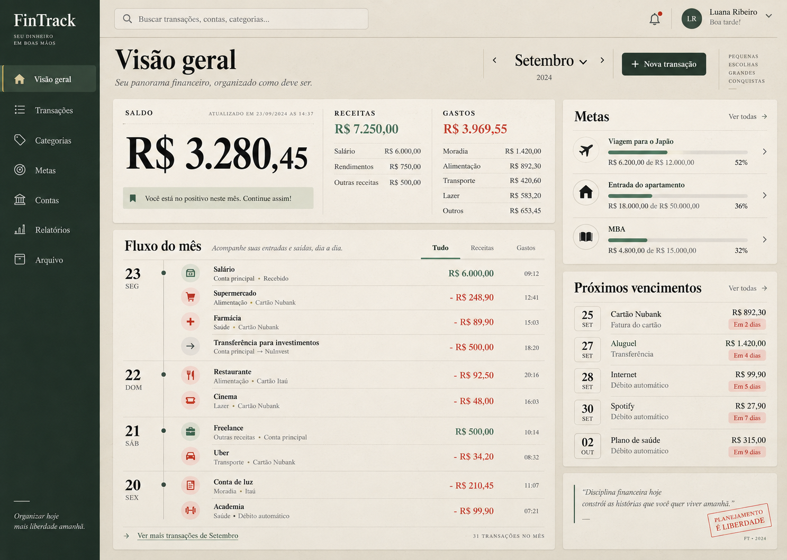
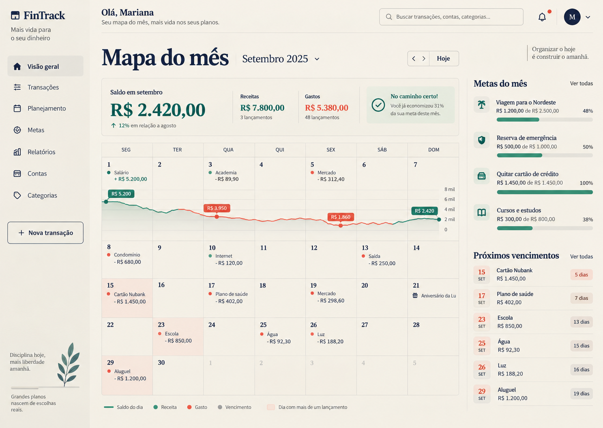
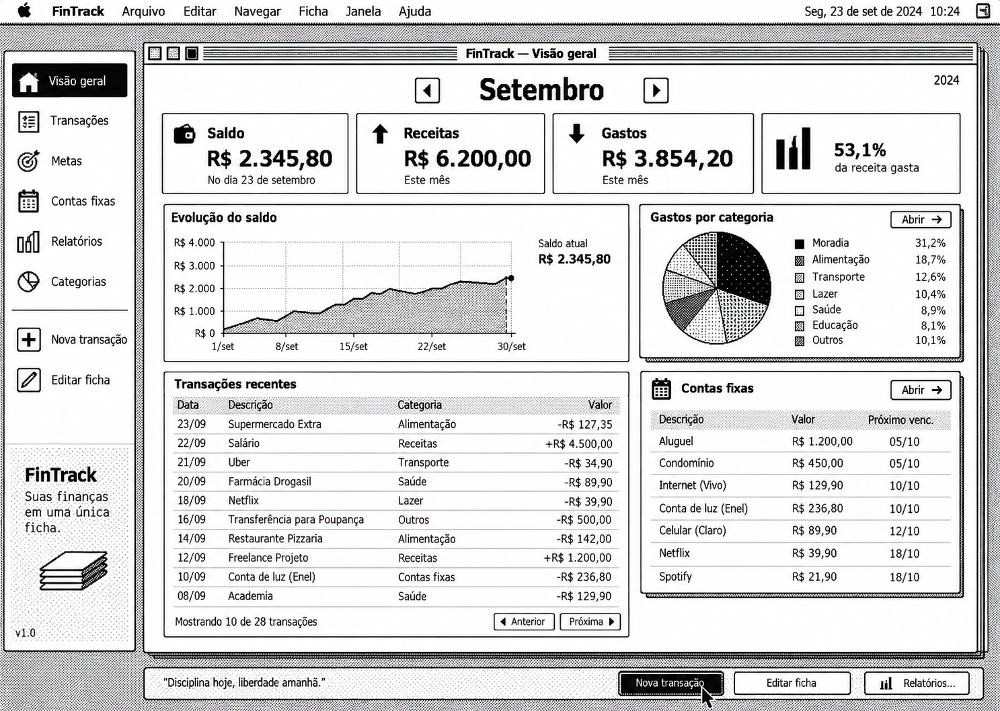
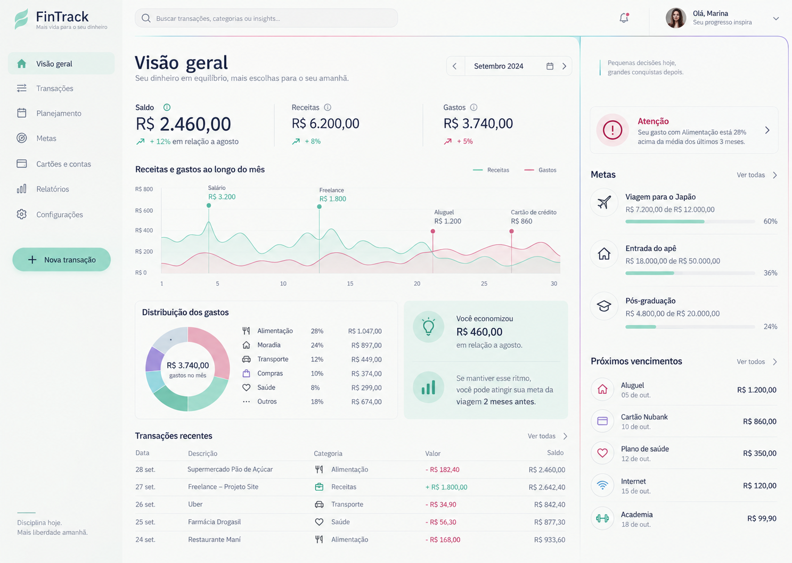
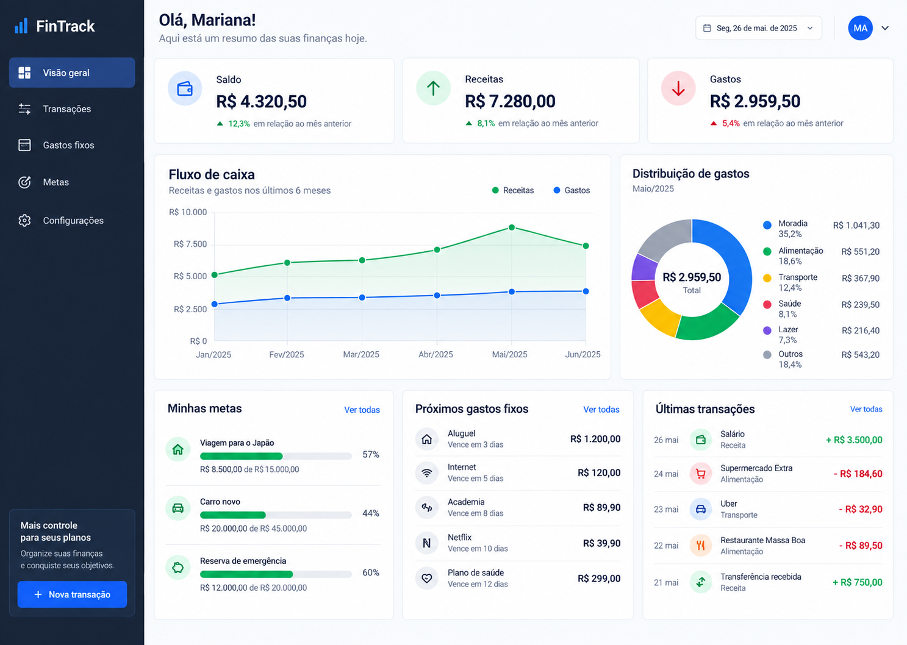

1. Arquivo vivo
Fichas contemporâneas, precisão editorial e um fluxo mensal que mantém cada detalhe consultável.

Veja os cinco comps abaixo e responda no chat com o número ou o nome da direção escolhida.
Fichas contemporâneas, precisão editorial e um fluxo mensal que mantém cada detalhe consultável.

O dinheiro organizado como um mês habitável, com contas e metas presas ao tempo real.

Interface monocromática direta, com consulta e edição no mesmo objeto.

Uma superfície silenciosa em que faixas estreitas de cor revelam mudanças e atenção.

A estrutura mais familiar da categoria, executada com clareza e acabamento profissional.
